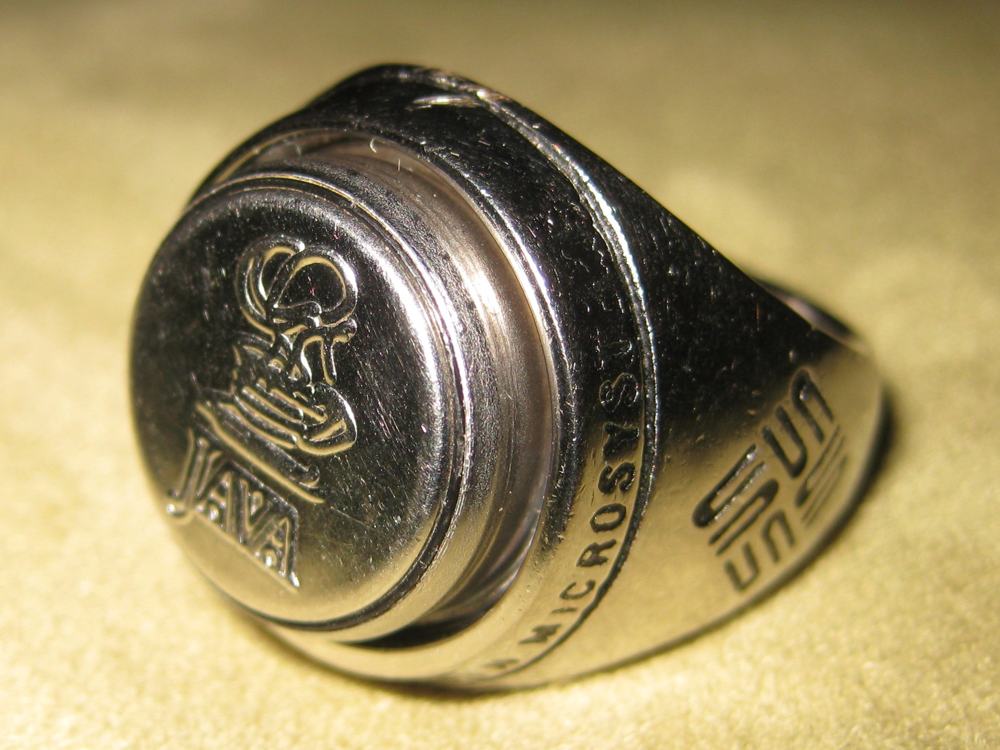

Dallas Semiconductor iButton
A 16mm steel can that turned touch into digital identity

Overview
The iButton is a microchip enclosed in a 16mm stainless steel can — the same form factor as a watch battery. Invented by Dallas Semiconductor and introduced in 1990, each iButton contains a unique, factory-lasered 64-bit serial number (ROM ID) that is globally unique and unalterable. The device communicates over Dallas Semiconductor's 1-Wire protocol, which sends both power and data over a single electrical conductor, allowing the iButton to function with just two contacts: the 'lid' and 'base' of the steel can.
The interaction model is touch. You press the iButton against a reader (a pair of spring-loaded contacts), and within milliseconds the computer knows exactly who or what you are. No keyboard, no card swipe, no PIN entry — just physical contact. The steel can is rugged enough to be worn on a keychain, embedded in a ring, or bolted to equipment. Variants soon added memory (up to 64KB), real-time clocks, temperature sensors, and cryptographic coprocessors — but the core interaction remained unchanged: touch and be recognized.
iButtons have been used as electronic keys for access control, time clocks for employee check-in, asset tags for equipment inventory, courier verification tokens, and — most visibly — as the Akbil smart ticket for Istanbul's public transit system, where millions of commuters touched their iButton fobs to reader pads for over a decade. The Java Ring (1998) embedded a Java Card 2.0 virtual machine into a finger-worn iButton, letting users carry cryptographic credentials, digital cash, and personal profiles as a ring they touched to readers.
Deep dive
The technical enabler of the iButton was Dallas Semiconductor's 1-Wire protocol, a half-duplex serial bus that transmits both data and power over a single conductor (plus ground). Each 1-Wire device includes a small capacitor (~800pF) that stores charge to power the chip during data transmission. This allowed the iButton to function with just two contacts — the stainless steel lid and base — with no battery, no antenna, and no exposed connector. Each iButton's 64-bit ROM ID includes an 8-bit family code (identifying device type), a 48-bit unique serial number, and an 8-bit CRC for error detection. The address space allows for over 280 trillion unique identities. The 1-Wire bus can support multiple devices on a single wire pair, with a deterministic search algorithm that can discover up to 75 devices per second. Data rates are 16.3 kbit/s in standard mode and 163 kbit/s in 'overdrive' mode. This protocol was the foundation for an entire ecosystem: temperature loggers, battery monitors, memory tokens, SHA-1 authenticators, and the Java-powered cryptographic iButtons. The protocol later found its way into Apple MagSafe power connectors (power supply identification), Dell laptop charger authentication, and countless embedded applications. References: Maxim Integrated 'Book of iButton Standards' (2002); Analog Devices 1-Wire technical documentation.
The iButton's interaction model — 'touch and be identified' — was a radical simplification of computer authentication at a time when passwords were still typed on keyboards. There is no cognitive load: you don't remember anything, you don't type anything. You make physical contact with a reader, and the computer recognizes you. This is a fundamentally embodied interaction: identity is stored in a physical object you carry and present through touch. The steel can form factor was deliberately designed for durability. The 16mm diameter (slightly larger than a US dime) and 3.1mm–5.9mm thickness meant it fit on keychains, could be riveted to equipment, and survived outdoor conditions from -40°C to +85°C. The stainless steel provided EMI shielding and corrosion resistance. The form factor was so distinctive that iButtons have been worn as earrings, embedded in dog tags, and mounted to shipping containers. The touch-based interaction anticipated several later HCI paradigms: the touch-to-pay gesture of contactless cards and mobile payments, the physical token model of YubiKey and hardware security keys, and the 'walk up and be recognized' model of ubiquitous computing. But the iButton required actual contact — not proximity — making the act of identification deliberate and tactile. References: Wikipedia 1-Wire article; Analog Devices EZ Spotlight 'History of the Durable, Versatile iButton'; Istanbul Akbil system documentation.
The first iButton product was the DS1990A Serial Number iButton, which contained only the 64-bit ROM ID — a purely identification-only device. Dallas Semiconductor quickly expanded the line: the DS1991 MultiKey iButton (three 384-bit password-protected memory sections), the DS1994 4K-bit plus time iButton (NV SRAM with real-time clock), the DS1920 temperature iButton (integrated thermometer with logging), and eventually the DS1954 cryptographic iButton with a hardware random number generator and SHA-1 engine. The most ambitious iButton was the Java Ring (1998), which embedded a Java Card 2.0 virtual machine and 6KB of applet memory into a finger-worn iButton. Users could carry digital credentials, electronic cash, and personal identity profiles as a ring. Touching the ring to a reader could unlock a door, log into a computer, pay for a coffee, or verify cryptographic signatures. The Java Ring was distributed at the 1998 JavaOne conference and became a symbolic artifact of the era's belief that computation would migrate from desktops into jewelry, clothing, and everyday objects. Dallas Semiconductor was acquired by Maxim Integrated in 2001 for approximately $2.5 billion. iButton products continued to be manufactured and sold under Maxim and later Analog Devices (which acquired Maxim in 2021). References: Stephen M. Curry, 'An introduction to the Java Ring,' JavaWorld (April 1998); fundinguniverse.com 'History of Dallas Semiconductor Corporation.'
Team & pioneers
- Dallas Semiconductor Corporation. Founded 1984 in Dallas, Texas. Inventor of the 1-Wire protocol and iButton product line. Acquired by Maxim Integrated in 2001.
- C. Michael Chang. CEO and co-founder of Dallas Semiconductor
- Derrell Coker. CTO and co-founder; key inventor on early 1-Wire and iButton patents
Media

Sources
- Wikipedia: 1-Wire (includes iButton history)
- Analog Devices EZ Spotlight: History of the Durable, Versatile iButton
- Maxim Integrated: Book of iButton Standards (2002)
- Stephen M. Curry, 'An introduction to the Java Ring,' JavaWorld, April 1998
- FundingUniverse: History of Dallas Semiconductor Corporation